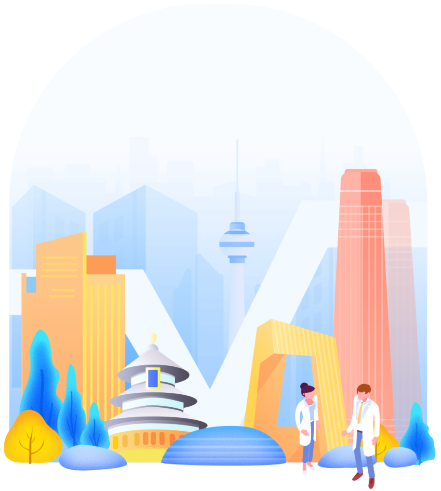
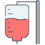
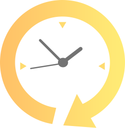

挂号(预约专家) 200元起 陪诊服务 300元起
佰医汇北上广就医绿通服务
陪诊服务 专人全程陪同就医 面诊绿通 快速挂号名院专家
检查绿通 项目检查加急服务 住院绿通 北上广名院转院快  预约手术 预约名院专家手术
北上广就医绿通服务优势
01 快速就医、节省时间 不耽误病情治疗 02 全程陪诊、简化流程 保证高效就医

03 指定专家、指定科室、指定时间 保证最好的就医服务
北上广就医绿通服务介绍
陪诊服务
专人全程陪同就医，包含诊前关怀、亲情式全程陪同代办服务（取号、缴费、取药）、协助就诊、协助检查以及后续疾病跟踪咨询等一站式服务
面诊绿通
根据客户就医需求，提供上海、北京、广州等三级甲等医院的专家门诊（含特需门诊）预约挂号服务，包含常见疾病及重大疾病的相关专家门诊预约T
检查绿通
根据预约医院需要做的检查项目安排快速检查，时刻跟进，优化流程，节省时间，不耽误病情治疗
住院绿通
在客户需要住院治疗且看诊专家已开具入院单后，为客户住院期间提供的服务。内容包括：床位协调、出入院手续协办，住院探访，并及时了解被保障成员病情动态，提供与住院相关的问题咨询
预约手术
根据客户就医需求，提供上海、北京、广州等三级甲等医院的手术（含特需门诊）预约服务，安全高效
绿通服务流程及注意事项
咨询准备
有意向请提前电话沟通客服专员，专线电话为: 400-631-9377（时间为工作时间早9:00--17:00）特殊时段或者特殊情况可电话18311267361安排处理，半小时内确定安排是否可安排业务，确定后请提交业务申请信息表。
提交申请
申请表发送 kefu@ebaiyihui.com, 负责人收到业务申请表以后，2小时内，我司客服专员会与客户电话联系，核对客户信息，告知需要的就医资料和证件，根据需要提供的具体业务，按时间安排服务。
确认下单
如果您选择的就诊日期，医生停诊或者其他原因无法完成就医预约，我们会第一时间跟您协商最近的就诊日期。
门诊预约
完成约定面诊时间后，客服专员会电话告知客户。
医院就诊
就医安排成功后，就医专员再次致电患者，安排就诊交接，就诊服务分为两种情况：
A、需要陪诊： 陪诊专员在约定地点跟患者见面陪同患者完成就医全程（4个小时），包括陪同候诊当次取结果，取药等，如须延长陪诊时间需要另行收费。
B、患者自行就诊： 提供轻陪诊，陪诊专员在约定地点跟患者见面，把证件和就诊号条交接给患者，带患者到诊室门口，患者自行就医，服务结束。
服务追踪
完成面诊以后，客服回访客户，了解整个服务质量，每月底反馈给客户渠道。